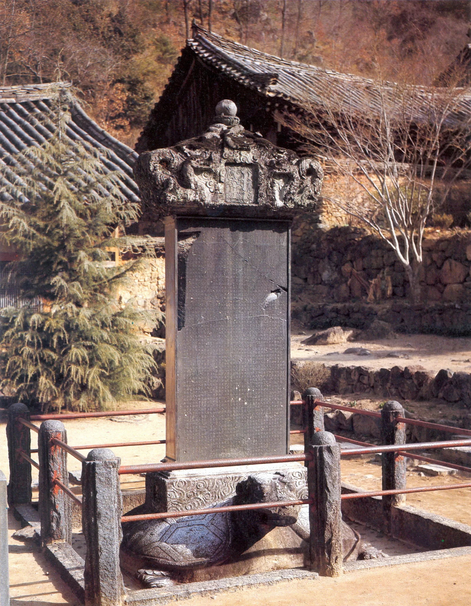
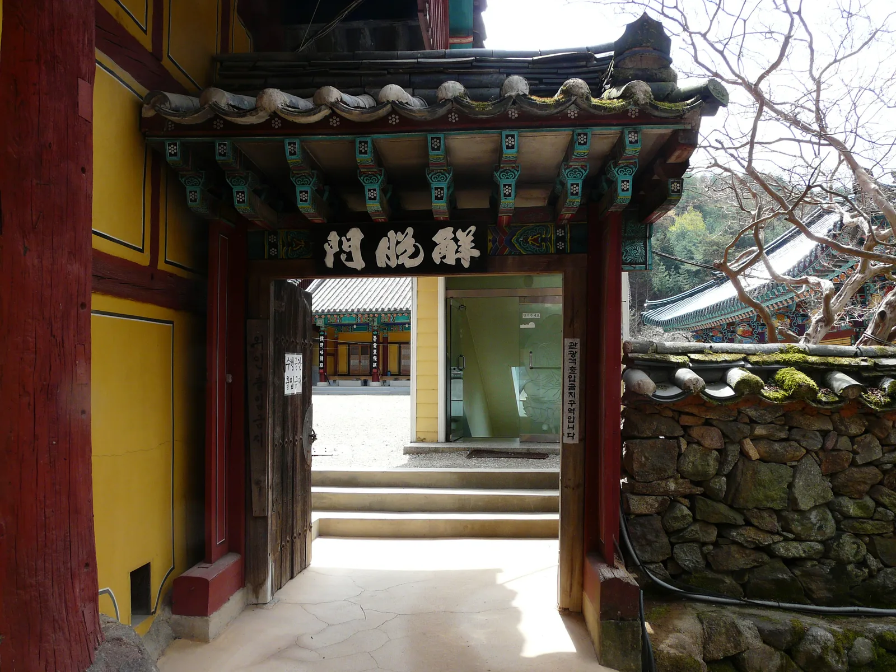
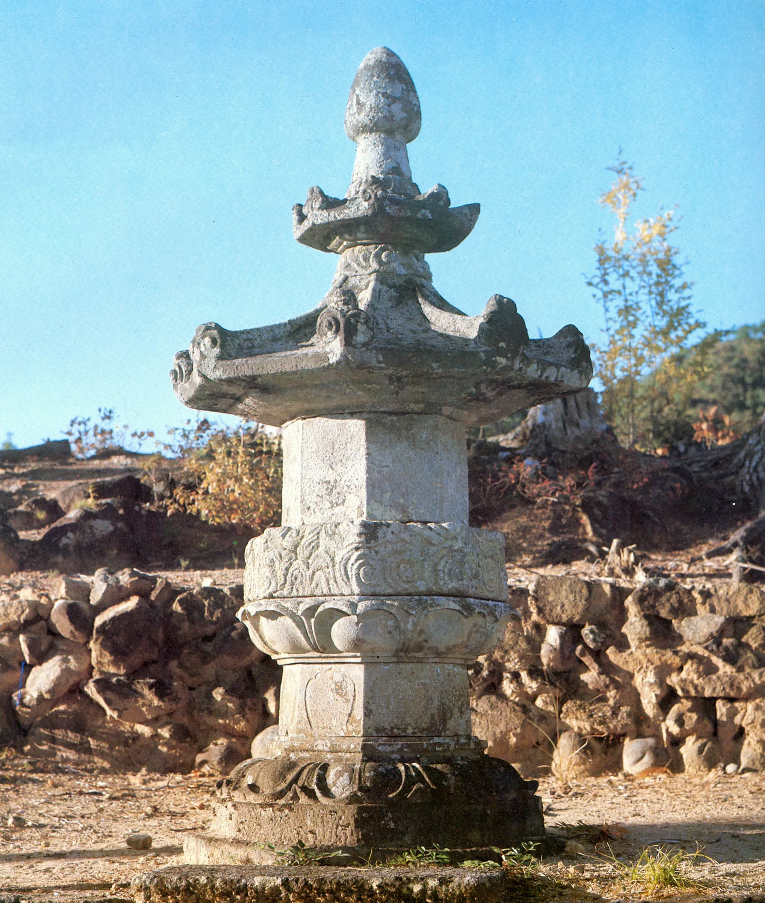
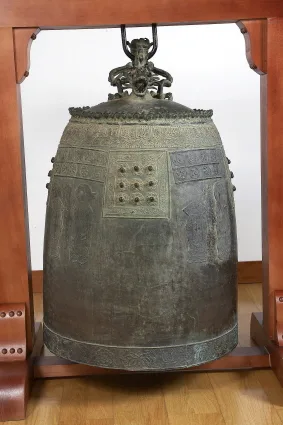
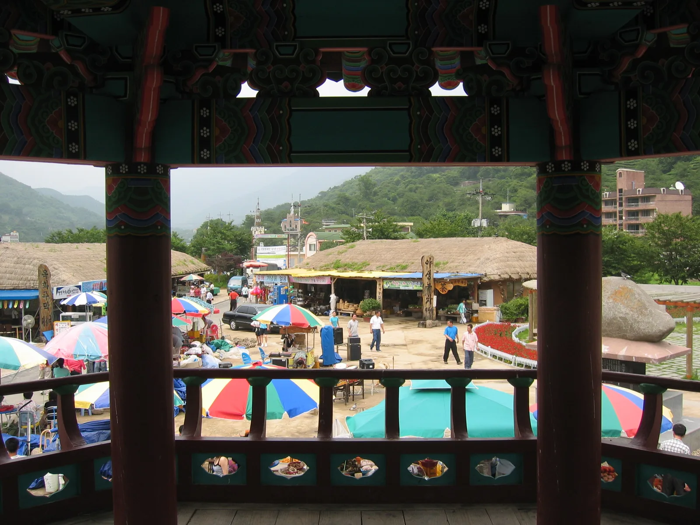
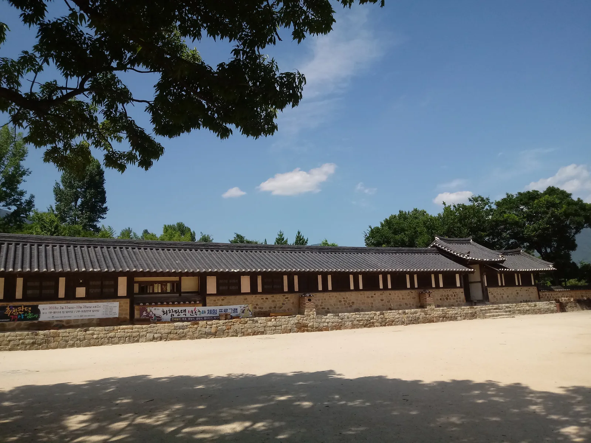
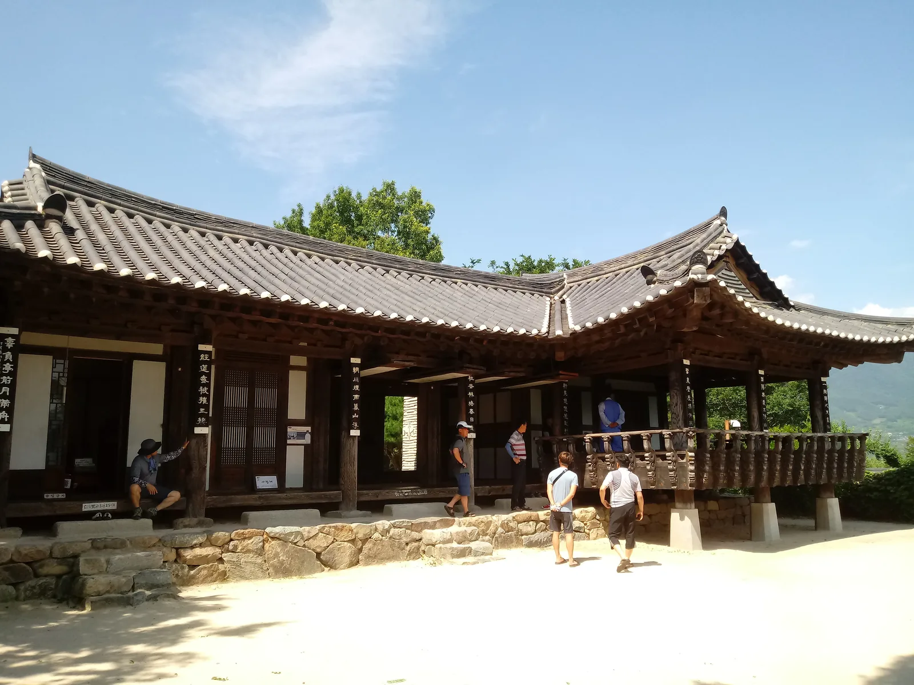
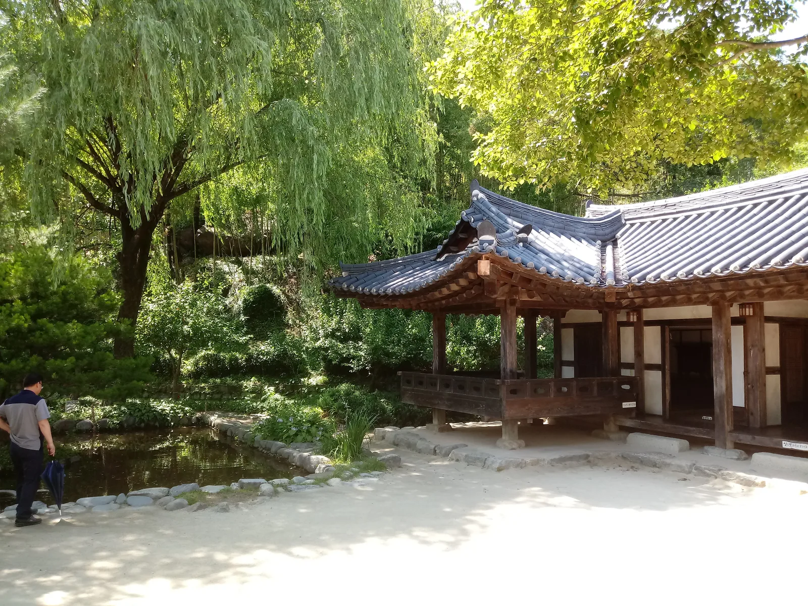
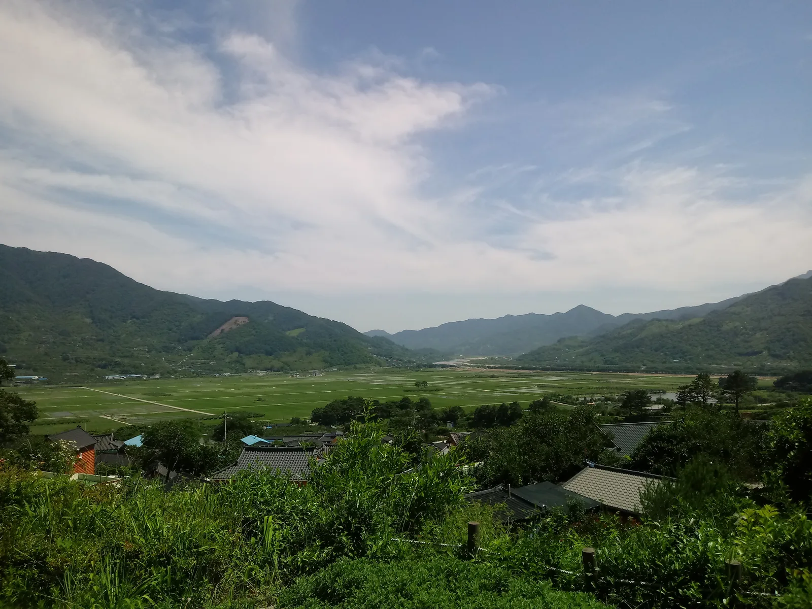

▲ 쌍계사의 중심 법당인 대웅전. 임진왜란 때 불탄 것을 1632년 벽암대사가 다시 세웠다
경남 하동군 화개면 일대는 봄이면 화개장터에서 쌍계사 입구까지 이어지는 6km 십리벚꽃길 때문에 전국에서 인파가 몰리는 곳이다. 그래서 벚꽃 시즌이 아니면 갈 이유가 없다고 여기기 쉽다. 하지만 벚꽃이 진 자리에는 722년(신라 성덕왕 21년) 창건된 천년고찰 쌍계사가 국보 진감선사탑비와 보물 대웅전·승탑·동종을 품고 있고, 그 아래로는 조선 후기부터 이어져 온 화개장터와 소설 '토지'의 무대인 최참판댁이 있다. 특히 가을이면 지리산 자락을 타고 내려오는 단풍과 섬진강 물빛이 어우러져 봄과는 또 다른 분위기를 낸다. 이 기사는 쌍계사의 창건 내력과 문화재, 화개장터, 최참판댁, 입장료·주차까지 방문 순서대로 정리했다.
1. 722년 옥천사에서 쌍계사로 — 천년고찰의 내력
쌍계사는 통일신라 성덕왕 21년(722년) 대비화상과 삼법화상이 세운 절로, 처음 이름은 옥천사(玉泉寺)였다. 지금의 이름은 신라 정강왕(재위 886~887)이 절 주변에서 두 개의 계곡이 만나는 지형을 보고 '쌍계사(雙磎寺)'로 고쳐 부르면서 굳어졌다. 임진왜란 때 전각 대부분이 불에 탄 것을 인조 10년(1632년) 벽암대사가 다시 세워 오늘에 이른다. 절이 자리한 지리산 자락은 삼국사기에 신라 흥덕왕 시절 처음 차나무를 심은 곳으로 기록된 지역이기도 해, 쌍계사 일대는 한국 차 문화의 발상지로도 꼽힌다.
2. 국보 진감선사탑비와 보물 대웅전·승탑·동종

▲ 국보 하동 쌍계사 진감선사탑비. 887년 신라 정강왕이 세웠고 비문은 고운 최치원이 짓고 썼다 ⓒ Wikimedia Commons
경내에서 가장 눈에 띄는 문화재는 진감선사탑비(眞鑑禪師塔碑)다. 887년(신라 정강왕 2년) 진감선사 혜소의 높은 도덕과 법력을 기려 세운 비석으로, 비문은 통일신라 말 대문장가 고운 최치원이 짓고 직접 글씨를 썼다. 그 가치를 인정받아 1962년 12월 20일 국보 제47호(현 국가유산 지정번호 체계로는 국보)로 지정됐다. 거북 모양 받침돌(귀부) 위에 비석을 세우고 용을 새긴 머릿돌(이수)을 얹은 전형적인 신라 탑비 양식을 갖추고 있다.

▲ 경내로 들어서는 해탈문. 이 문을 지나면 대웅전이 있는 중심 영역이 펼쳐진다 ⓒ Wikimedia Commons
절의 중심 법당인 대웅전(大雄殿)은 1632년 벽암대사가 중건한 건물로, 앞면 5칸·옆면 3칸 규모에 화려한 다포 양식 공포와 우아한 곡선의 팔작지붕을 갖췄다. 이런 건축적 가치를 인정받아 보물로 지정돼 있다. 경내 한쪽에는 조선 후기 승려의 사리를 모신 승탑(僧塔)이 있는데, 팔각원당형 기단 위에 지붕돌을 얹은 형태로 역시 보물로 지정됐다.

▲ 보물로 지정된 쌍계사 승탑. 팔각원당형 기단에 지붕돌을 얹은 형태다 ⓒ Wikimedia Commons

▲ 보물로 지정된 쌍계사 동종. 표면에 정교한 문양과 명문이 남아 있다 ⓒ Wikimedia Commons
3. 가을 단풍과 계곡 — 불일폭포·국사암까지
쌍계사가 가장 붐비는 시기는 단연 벚꽃철이지만, 벚꽃이 진 뒤인 여름 녹음과 가을 단풍도 지리산 자락 고찰의 정취를 즐기기에 좋은 시기로 꼽힌다. 절 양옆으로 흐르는 두 계곡물이 만나 이름조차 '쌍계(雙磎)'가 된 지형 덕분에, 경내 어디서든 물소리와 함께 단풍이 든 산세를 마주할 수 있다. 걸음에 여유가 있다면 쌍계사에서 등산로를 따라 약 3km를 오르는 코스도 있다. 갈림길에서 왼쪽으로 가면 조릿대 숲길 끝에 작은 암자 국사암이 나오고, 오른쪽으로 가면 높이 60m·폭 3m 규모로 상하 2단을 이루는 불일폭포에 닿는다. 사계절 수량이 마르지 않는 폭포로, 왕복 2시간 안팎이 걸린다.
4. 화개장터 — 5일장에서 상설시장으로, '역마'의 무대

▲ 섬진강과 화개천이 만나는 지점에 자리한 화개장터. 지리산 특산물과 재첩국을 파는 좌판이 늘어선다 ⓒ Wikimedia Commons
쌍계사에서 십리벚꽃길을 따라 내려오면 화개장터가 나온다. 조선 중엽부터 해방 전까지 전국에서 손꼽히던 시장으로, 경상도와 전라도 물산이 섬진강 뱃길을 따라 오가며 번성했다. 소설가 김동리의 단편 '역마(驛馬)'의 배경이 된 곳으로도 유명하다. 과거에는 5일장 형태로 열렸지만 2001년 공설시장으로 정비되면서 지금은 상설시장으로 바뀌어 연중 방문할 수 있다. 지리산에서 나는 야생 녹차, 둥글레, 더덕 같은 특산물과 함께 보리밥, 산채비빔밥, 재첩국 등을 파는 음식점들이 자리한다. 매년 봄에는 그린나래공원과 십리벚꽃길 일원에서 화개장터벚꽃축제가 열린다.
하동군청에서 화개장터 축제·관광 정보 확인 가능5. 최참판댁 — 소설 '토지'의 무대, 평사리 들판

▲ 박경리 소설 '토지'의 무대를 재현한 최참판댁. 돌담을 따라 행랑채가 길게 이어진다 ⓒ Wikimedia Commons
화개장터에서 섬진강을 따라 조금만 이동하면 악양면 평사리에 최참판댁이 있다. 박경리의 대하소설 '토지'에 등장하는 지주 최참판 일가의 저택을 재현한 한옥으로, 2001년 본채가 완공된 이후 평사리문학관과 민속마을 세트 등이 잇따라 들어섰다. '토지'는 1969년 연재를 시작해 1994년 16권으로 완간된 작품으로, 한국 근현대문학을 대표하는 대하소설로 꼽힌다. 최참판댁이 자리한 평사리 들판은 유엔세계관광기구(UNWTO)가 선정한 세계 최우수관광마을 32곳 중 하나에 이름을 올리기도 했다.

▲ 최참판댁 사랑채. 소설 속 최참판 일가가 손님을 맞던 공간을 재현했다 ⓒ Wikimedia Commons

▲ 연못과 정자가 있는 별당 일원. 안채·사랑채와는 다른 조용한 분위기를 낸다 ⓒ Wikimedia Commons

▲ 최참판댁이 자리한 언덕에서 내려다본 평사리 들판. 유엔세계관광기구 최우수관광마을에 선정됐다 ⓒ Wikimedia Commons
최참판댁 관람료는 성인 2,000원, 청소년·군인 1,500원, 어린이 1,000원이며 만 65세 이상 경로자, 장애인, 국가유공자, 7세 이하 어린이, 하동군민은 무료다. 20인 이상 단체는 500원씩 할인된다. 전용 주차장이 마련돼 있다.
디지털하동문화대전에서 최참판댁 상세 정보 확인 가능6. 입장료·주차·가는 법
쌍계사는 2023년 5월 4일부터 문화재관람료(입장료)가 폐지돼 누구나 무료로 경내를 둘러볼 수 있다. 경남의 옥천사·표충사·내원사·통도사·해인사 등과 함께 폐지 대상에 포함됐다. 화개장터는 상설시장으로 연중 무료 개방되며, 최참판댁만 별도 관람료를 받는다. 세 곳 모두 화개면 일대에 모여 있어 하루 코스로 함께 둘러보기 좋다.
| 항목 | 내용 |
|---|---|
| 쌍계사 입장료 | 무료(2023년 5월 폐지) |
| 화개장터 | 상설시장, 연중 무료 개방 |
| 최참판댁 입장료 | 성인 2,000원 · 청소년/군인 1,500원 · 어린이 1,000원(경로·장애인·하동군민 무료) |
| 쌍계사 위치 | 경남 하동군 화개면 쌍계사길 59 |
| 화개장터 위치 | 경남 하동군 화개면 쌍계로 27 |
| 최참판댁 위치 | 경남 하동군 악양면 평사리길 66-7 |
| 이동 거리(참고) | 쌍계사 ↔ 화개장터 약 6km(십리벚꽃길), 화개장터 ↔ 최참판댁 약 10km |
세 곳 모두 승용차 기준 각지에 무료 또는 유료 주차장이 마련돼 있으며, 벚꽃 축제 기간과 주말 성수기에는 진입로가 정체될 수 있어 대중교통이나 이른 시간대 방문이 권장된다.
경남신문에서 최참판댁 입장료 최신 정보 확인 가능✅ 하동 쌍계사·화개장터·최참판댁, 가기 전 체크리스트
· 쌍계사는 722년 옥천사로 창건, 신라 정강왕이 쌍계사로 개칭, 1632년 벽암대사 중건
· 국보 진감선사탑비(887년, 최치원 비문)와 보물 대웅전·승탑·동종 보유
· 쌍계사~국사암~불일폭포 등산 코스는 왕복 약 2시간, 불일폭포는 높이 60m
· 화개장터는 김동리 '역마'의 배경, 2001년 상설시장으로 개편, 재첩국·지리산 특산물이 명물
· 최참판댁은 박경리 '토지'의 무대, 평사리 들판은 UNWTO 세계 최우수관광마을 선정
· 쌍계사 입장료는 2023년 5월 폐지로 무료, 최참판댁은 성인 2,000원
· 세 곳 모두 화개면·악양면 일대에 모여 있어 하루 코스로 연계 방문 가능